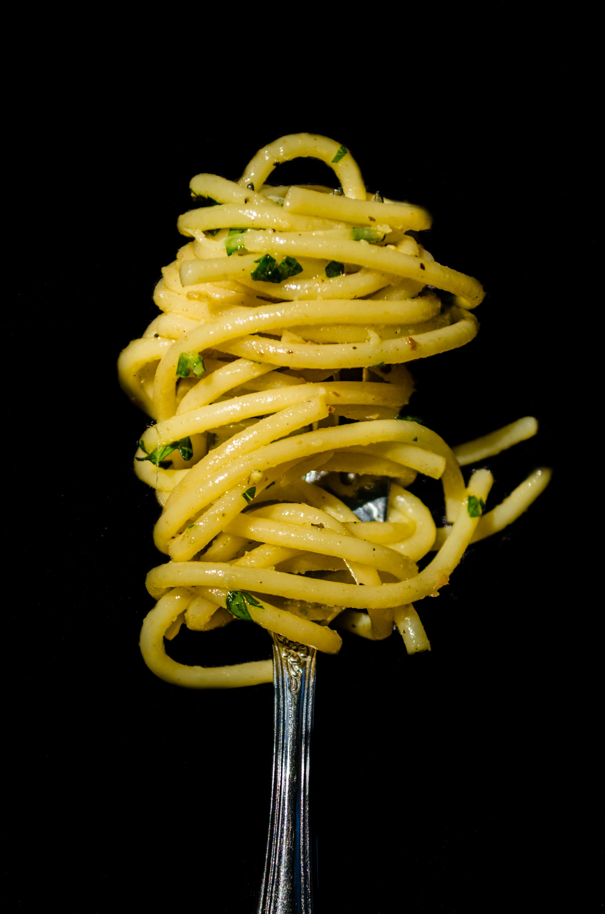
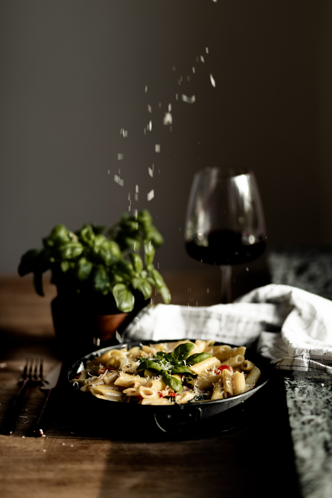
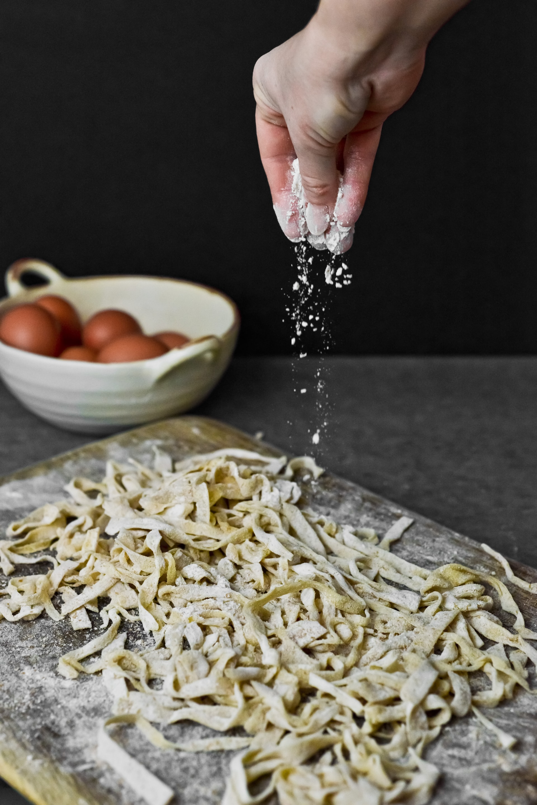

About Us

Наши достоинства
Мы уже создаем более 15 видов мы планируем пойти в Италию и создать последний 16-й вид в нашей коллекции. Мы стараемся только для вас стремимся к высотам мы хотим чтобы в вашем доме всегда были вкусные макароны из нашей фирмы.

Нашa популярность
У нас покупает почти вся садистски область спросите всех они скажут у нас дома макароны от компаний ООО"Olim Avezov".Я этого гарантирую что вкус макарон не учат из вашего рта на год.

Наши старания
Мы уже производим более 15 или 16 видов это очень сложно 16 видов макарон .Мы тратим много денег много ,ресурсов ,времени, чтобы приготовить макароны для вас только для вас. Все наши оборудование прямо из Украины,потому что в Украине и в Таджикистане вкусные макароны.